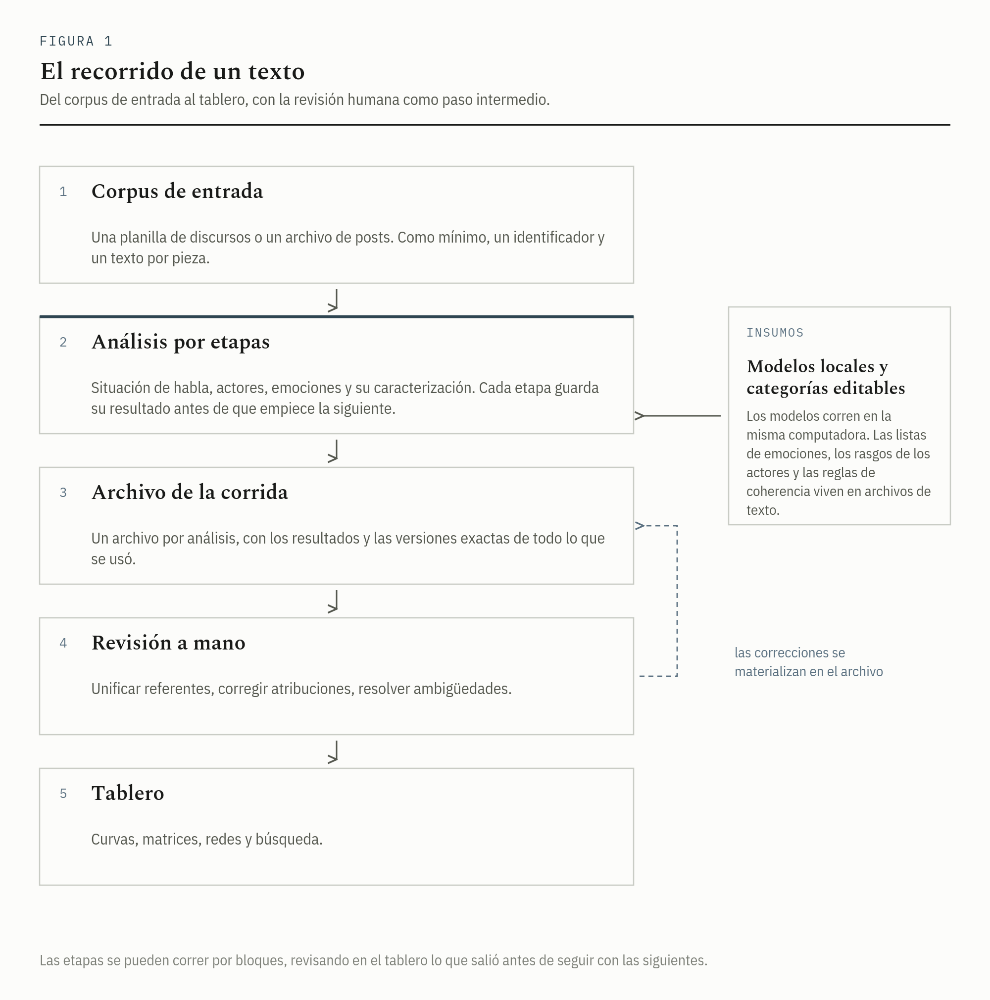

Leer un discurso por sus emociones, sin perder de vista el texto
EmoParse recorre un conjunto de textos y reconstruye, tramo por tramo, las emociones que ese tramo pone en juego: quién la siente, qué la desencadena, con qué orientación y con qué intensidad. Cada lectura queda atada a las palabras exactas que la habilitan.
Los argentinos de bienexperienciador están indignadosemoción con la castafuente que les roba el fruto de su trabajo.
- Tipo de emoción
- indignación
- Quién la siente
- argentinos de bien (colectivo)
- Qué la desencadena
- la casta (colectivo)
- Orientación
- disfórica (del lado de lo desagradable)
- Intensidad
- alta
- Cómo la sostiene el texto
- un adjetivo atribuido a un actor, «indignados»
- Grado de realización
- realizada (el discurso la da por efectiva, no por posible)
Toda salida del sistema conserva el fragmento literal que la justifica. Sin ese fragmento, la lectura no se registra.
Esa correspondencia entre un fragmento del texto y una lectura sostiene el programa entero. El sistema no informa que en el discurso «hay indignación»: informa que cierto adjetivo, atribuido a cierto colectivo y referido a cierto adversario, admite ser leído como indignación, y deja a la vista las tres piezas para que quien analiza pueda revisarlas, corregirlas o descartarlas.
1Qué hace
El punto de partida es un conjunto de textos: discursos presidenciales, comunicados, declaraciones, posts de redes sociales. El sistema los corta en unidades de lectura, y sobre cada unidad realiza una serie de pasos encadenados. Primero reconstruye la situación de habla: quién habla, a quiénes se dirige, con qué colectivos se identifica. Después detecta las emociones, identifica a los actores involucrados y caracteriza cada emoción en un conjunto de dimensiones fijas. El resultado se guarda en un archivo de resultados propio de esa corrida, y se explora en una aplicación de escritorio con gráficos y tablas.
El trabajo lo hacen modelos de lenguaje (los programas que están detrás de asistentes como ChatGPT: reciben un texto y producen otro), con una diferencia respecto del uso habitual. Corren en la computadora de quien analiza, sin conexión con ningún servicio externo, así que el corpus no sale de esa máquina. Y no responden en prosa libre: cada paso les exige devolver una ficha con campos fijos, cuyos valores posibles están declarados de antemano.

2Qué queda registrado
Cada emoción detectada se guarda como una fila con un conjunto fijo de campos. Los primeros fijan de quién y de qué se trata; los siguientes la describen en varias dimensiones independientes; el último conserva el fragmento del texto que la sostiene.
| Campo | Qué guarda | Valores |
|---|---|---|
| Experienciador | El actor al que se le atribuye la emoción. | Abierto, resuelto contra la lista de actores del corpus. |
| Fuente | Aquello que la desencadena. Puede combinar varias entidades. | Abierto. |
| Tipo de emoción | El nombre de la emoción, normalizado después contra una lista editable. | Abierto en la detección, canónico al final. |
| Foria | La orientación de valor de la emoción. | eufórica · disfórica · ambifórica · afórica |
| Modo de existencia | El grado en que el discurso la da por realizada. | virtual · actual · potencial · realizado |
| Intensidad | Cuánta energía afectiva presenta en esa unidad. | alta · baja · neutra |
| Dominancia | Si se manifiesta por el cuerpo, por la evaluación o por ambos. | corporal · cognoscitiva · mixta |
| Duración | Cuánto dura el estado en el discurso. | instantánea · durable · permanente |
| Temporalidad | Dónde se ubica respecto del momento en que se habla. | contemporánea · pasada · futura · atemporal |
| Aspecto | Cómo se presenta el desarrollo interno del estado. | perfectivo · imperfectivo · ingresivo · terminativo · iterativo |
| Justificación | El fragmento literal del texto que habilita la lectura. | Copiado del original, sin alterar. |
eufórica disfórica ambifórica afórica
La foria es el eje que ordena la mayor parte de las visualizaciones del tablero: distingue lo que el discurso presenta del lado de lo agradable de lo que presenta del lado de lo desagradable, y admite dos casos intermedios, la coexistencia de ambos polos y la ausencia de orientación. Ese par cromático es el único color con función analítica en el sistema, y se mantiene igual en todas las vistas.1
Un análisis opcional agrega, sobre cada emoción ya detectada, el entramado de operaciones que la rodean: qué la vehiculiza entre su origen y quien la siente, si el discurso la legitima o la rechaza, si pone en duda su autenticidad, si intenta activarla o bloquearla, y si aparece afirmada o bajo el alcance de una negación.
3Cuatro decisiones de fondo
- Cada corrida queda archivada por separado
- Los resultados de un análisis se guardan en un archivo propio, junto con las versiones exactas de las instrucciones, las listas de categorías y los formatos de salida que se usaron. Volver a correr el mismo corpus meses después, o comparar dos análisis del mismo material, no requiere reconstruir nada de memoria.
- Toda lectura queda anclada al texto
- Ninguna emoción se registra sin el fragmento que la justifica, y ese fragmento queda enlazado a la unidad de la que salió. Las cifras agregadas del tablero pueden abrirse hasta llegar a la frase concreta que las produjo.
- Todo corre en la máquina de quien analiza
- Los modelos se descargan una vez y trabajan sin conexión. Para corpus sensibles, o sujetos a resguardo, el material no atraviesa ningún servidor ajeno. La arquitectura admite además conectarse a servicios externos, si el caso lo justifica.
- Las categorías son editables
- Las listas de emociones, de rasgos de los actores y de reglas de coherencia viven en archivos de texto aparte del código. Quien analice un corpus con otras exigencias puede ajustarlas sin tocar el programa.
4Qué queda afuera
El sistema trabaja sobre lo que el texto muestra. Una emoción registrada es una hipótesis sobre cómo puede leerse una configuración de palabras, y vale como tal. Nada de lo que produce autoriza una afirmación sobre el estado mental de quien escribió o pronunció el texto.
- La salida no se reduce a positivo, negativo o neutro. Las emociones se detectan con vocabulario abierto y se describen en varias dimensiones que no se dejan colapsar en una escala única.
- No hay servicio en línea, ni cuenta, ni cuota. Es un programa que se instala y se ejecuta localmente.
- La revisión humana es parte del método. El sistema propone; la unificación de referentes, la resolución de ambigüedades y la corrección de atribuciones quedan en manos de quien analiza, con herramientas para hacerlo a escala.
5Por dónde seguir
Notas
- Las cuatro categorías provienen de la semiótica tensiva, donde la foria nombra la orientación de valor mínima que organiza un universo de sentido. Ambifórico designa la coexistencia de las dos orientaciones en una misma emoción; afórico, la ausencia de orientación marcada. ↩